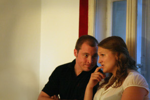

Anna lädt ein. Zu ihrer beschaulichen Geburtstagsfeier. Die falsche Mischung geladener und ungeladener Gäste, ein großer Bottich Bowle und die, bei näherer Betrachtung doch recht stark voneinander abweichenden Erinnerungen aller Anwesenden an die letzte Silvesterfeier reichen jedoch letztendlich aus, um jede Beschaulichkeit auszutreiben.
Mit Ronny Barner, Ina Grimmer, Claudia Haigermoser, Thomas Kempf, Michael Vollmann, Stella Voutta und Stefan Wilhelm
Regie: Maria Milisavljevic